1. Claims History · benefit
CAR MAINTENANCE · 两列表格详情
modules/claims/options/history.html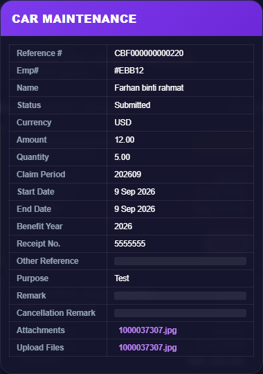
2. Claims History · medical
Medical · 两列表格详情
modules/claims/options/history.html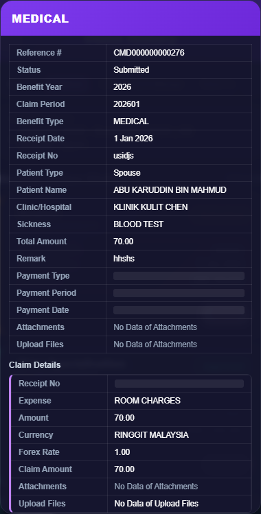
3. Claims History · ot
OT Claim History · 两列表格详情
modules/claims/options/history.html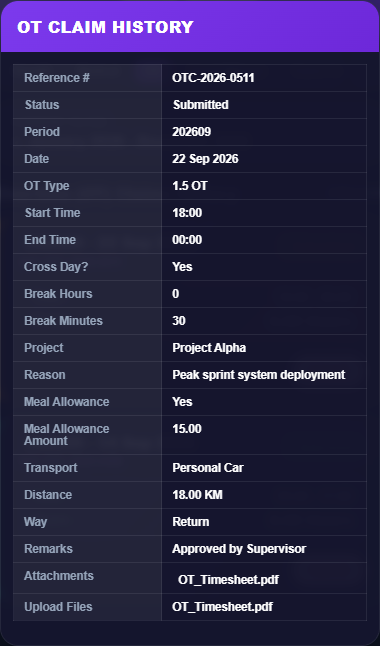
4. Claims History · travel
Travelling Mileage Listing · 两列表格详情
modules/claims/options/history.html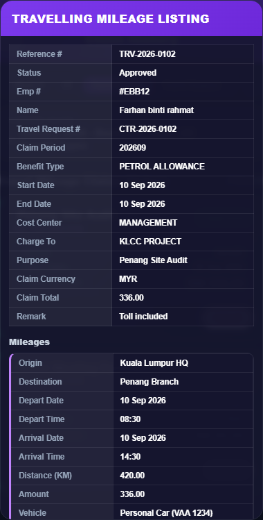
5. Claims History · travelRequest
Travel Request History · 两列表格详情
modules/claims/options/history.html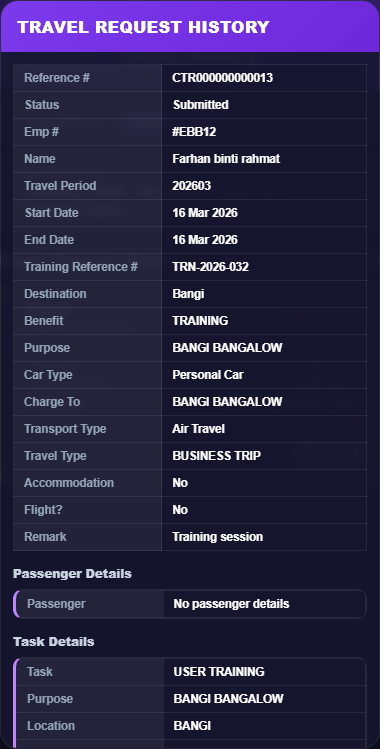
6. Claims History · entertainment
Entertainment Claim Listing · 两列表格详情
modules/claims/options/history.html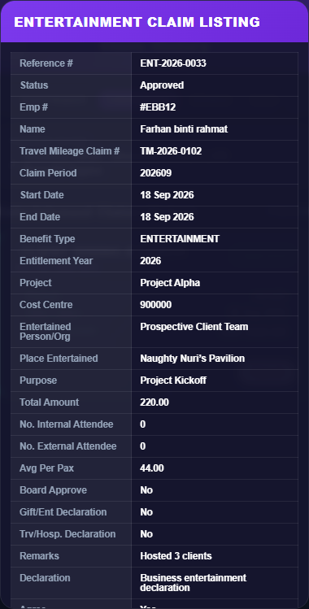
7. Claims History · advance
Advance Request Listing · 两列表格详情
modules/claims/options/history.html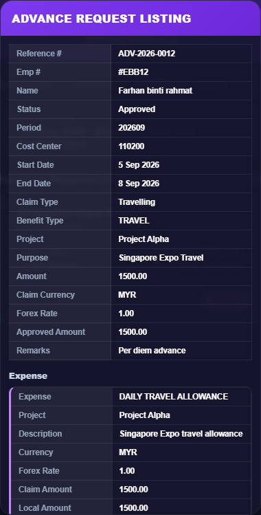
8. Claims History · expense
Expense Claims · 两列表格详情
modules/claims/options/history.html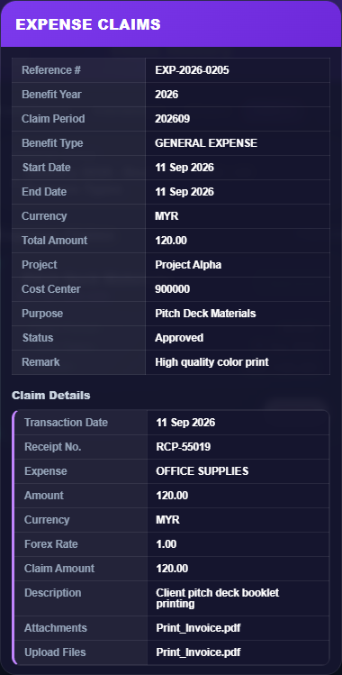
9. Claims Pending Approval · Benefit
Benefit Claim Approval · 两列表格详情
modules/claims/options/pending-approval.html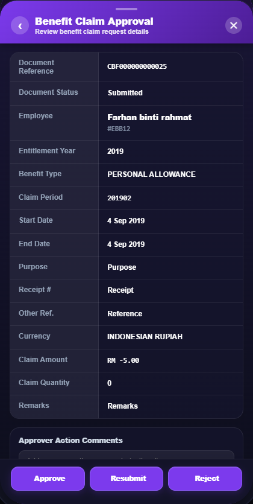
10. Claims Pending Approval · Medical
Medical Claim Approval · 两列表格详情
modules/claims/options/pending-approval.html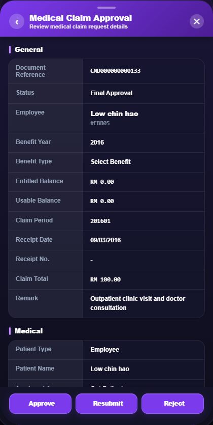
11. Claims Pending Approval · OT
OT Claim Approval · 两列表格详情
modules/claims/options/pending-approval.html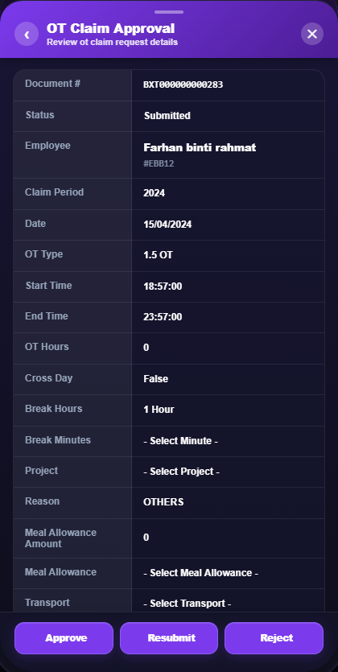
12. Claims Pending Approval · Travel Mileage
Travel Mileage Approval · 两列表格详情
modules/claims/options/pending-approval.html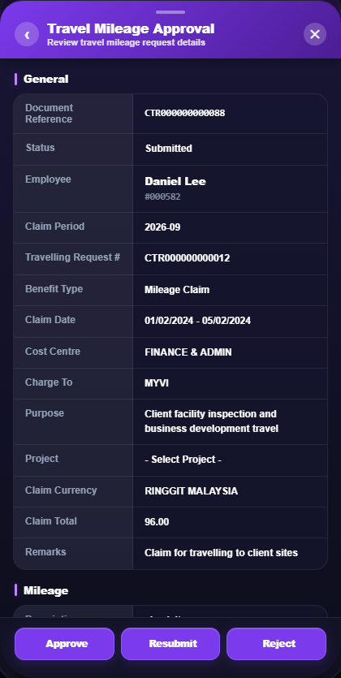
13. Claims Pending Approval · Travel Request
Travel Request Approval · 两列表格详情
modules/claims/options/pending-approval.html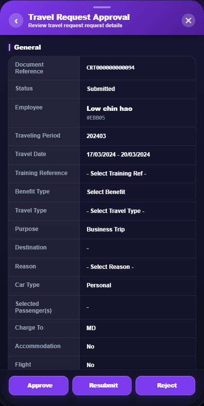
14. Claims Pending Approval · Entertainment
Entertainment Claim Approval · 两列表格详情
modules/claims/options/pending-approval.html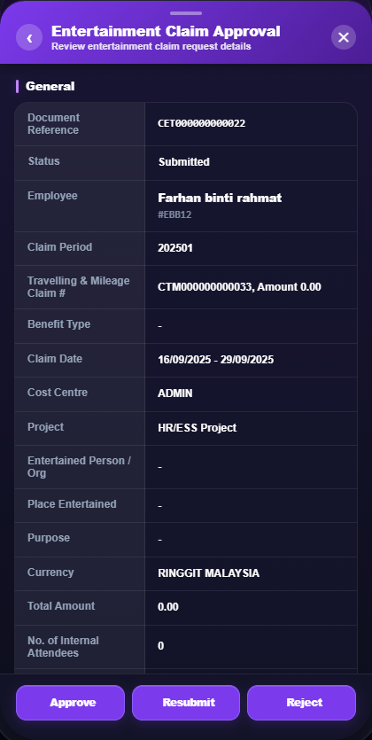
15. Claims Pending Approval · Advance
Advance Request Approval · 两列表格详情
modules/claims/options/pending-approval.html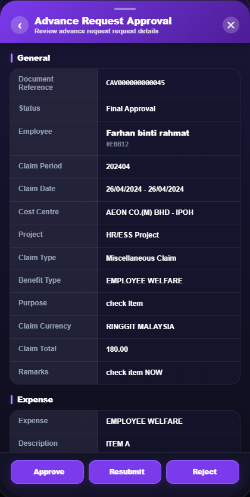
16. Claims Pending Approval · Expense
Expense Claim Approval · 两列表格详情
modules/claims/options/pending-approval.html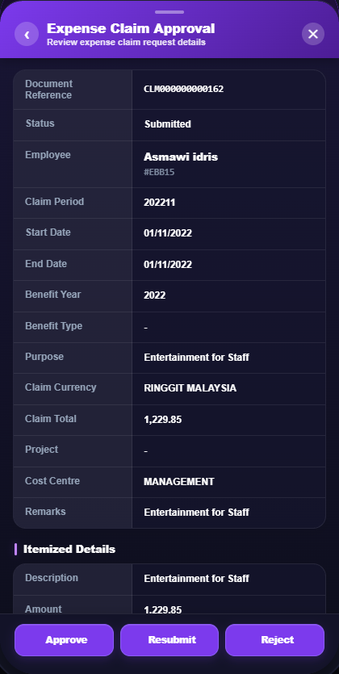
17. Leave History · leave
Leave Detail · 两列表格详情
leave.html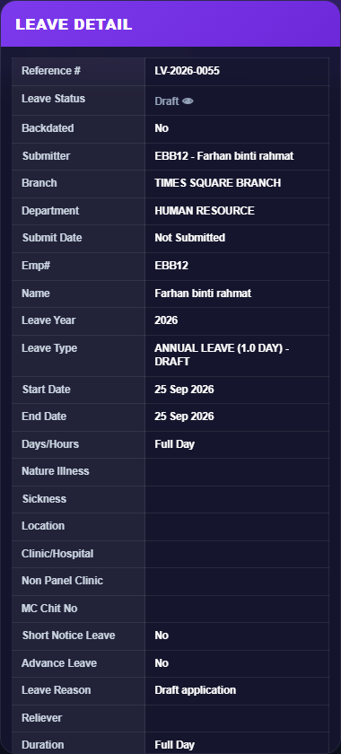
18. Leave History · credit
Leave Credit History · 两列表格详情
leave.html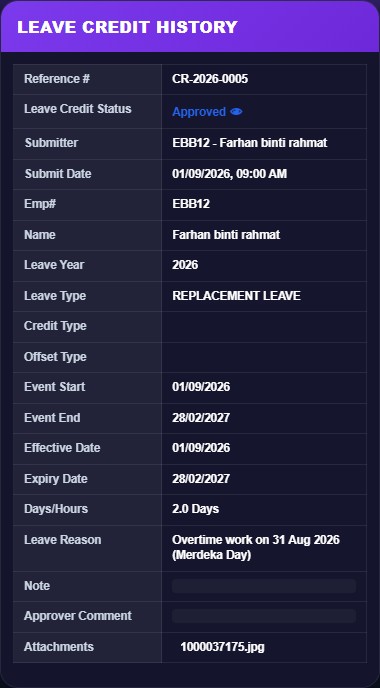
19. Leave History · offtime
Time Off Detail · 两列表格详情
leave.html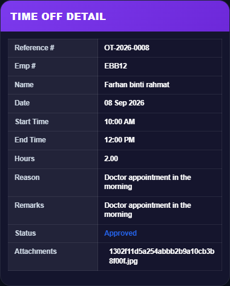
20. Leave Team · Employee leave
Leave Detail · 两列表格详情
leave.html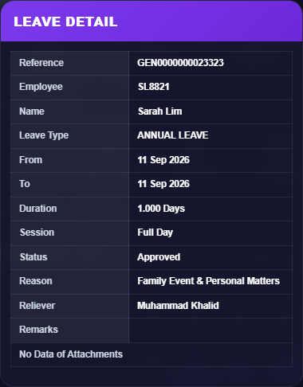
21. Leave Pending Approval · Leave
Leave Approval · 两列表格详情
leave.html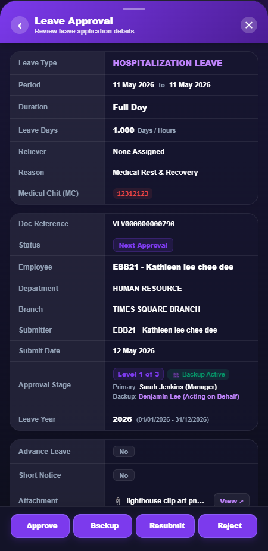
22. Leave Pending Approval · Leave Credit
Leave Credit Approval · 两列表格详情
leave.html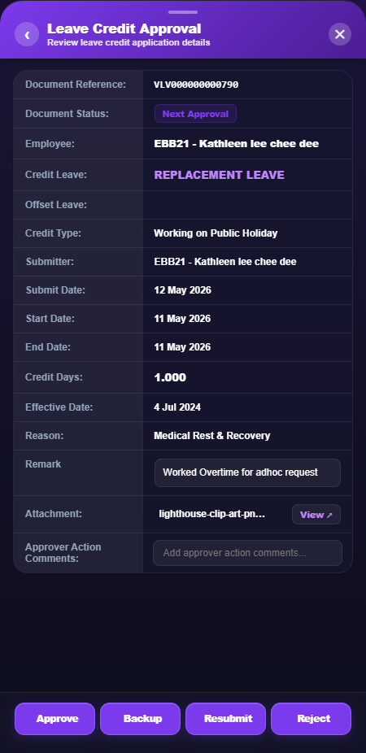
23. Attendance history.html · Clocking
Clocking Detail · 两列表格详情
modules/attendance/options/history.html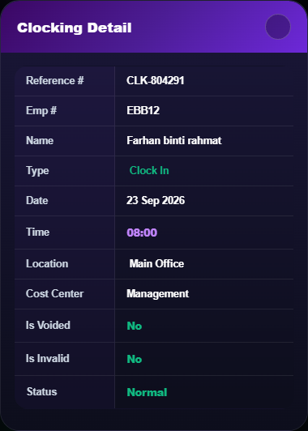
24. Attendance history.html · Time Off
Time Off Detail · 两列表格详情
modules/attendance/options/history.html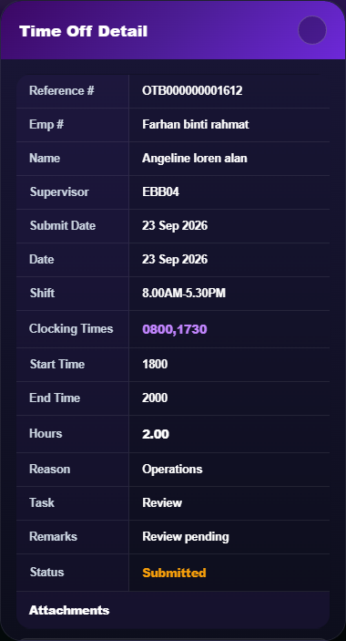
25. Attendance history.html · Attendance Advice
Attendance Advice Detail · 两列表格详情
modules/attendance/options/history.html
26. Attendance clocking-history.html · Clocking
Clocking Detail · 两列表格详情
modules/attendance/options/clocking-history.html
27. Attendance clocking-history.html · Time Off
Time Off Detail · 两列表格详情
modules/attendance/options/clocking-history.html
28. Attendance clocking-history.html · Attendance Advice
Attendance Advice Detail · 两列表格详情
modules/attendance/options/clocking-history.html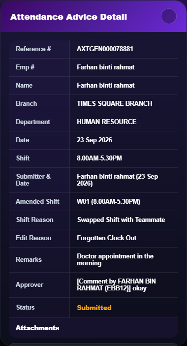
29. Attendance Pending Approval · OT Plan Request
OT Plan Approval · 两列表格详情
modules/attendance/options/team.html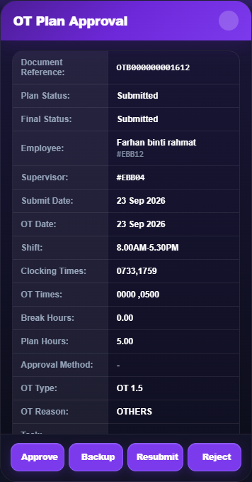
30. Attendance Pending Approval · Attendance Feedback
Attendance Advice Approval · 两列表格详情
modules/attendance/options/team.html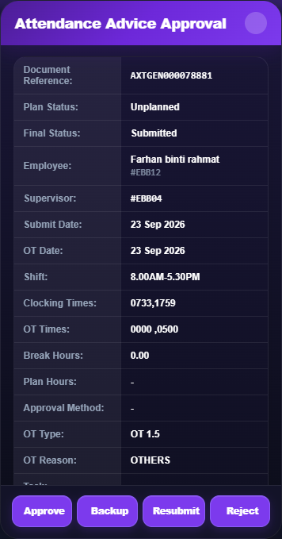
31. Attendance Pending Approval · Final OT Request
Final OT Approval · 两列表格详情
modules/attendance/options/team.html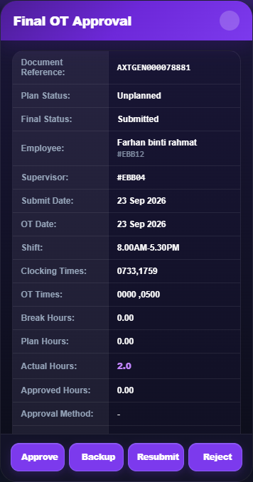
32. Payroll History · tax
Tax Relief Detail · 两列表格详情
modules/payroll/options/history.html?category=tax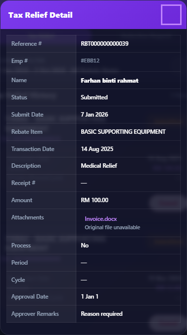
33. Payroll Pending Approval · tax
Tax Relief Detail · 两列表格详情
modules/payroll/options/pending-approval.html?tab=tax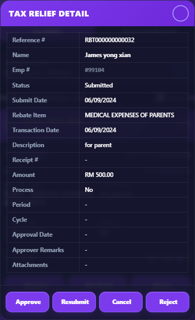
34. Payroll History · deduction
Deduction Request Detail · 两列表格详情
modules/payroll/options/history.html?category=deduction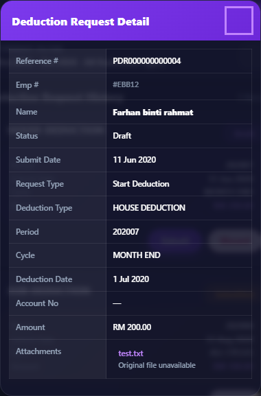
35. Payroll Pending Approval · deduction
Deduction Request Detail · 两列表格详情
modules/payroll/options/pending-approval.html?tab=deduction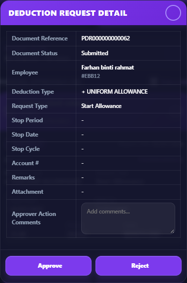
36. Payroll Team · Tax Relief
Tax Relief Detail · 相近布局
modules/payroll/options/tax-relief.html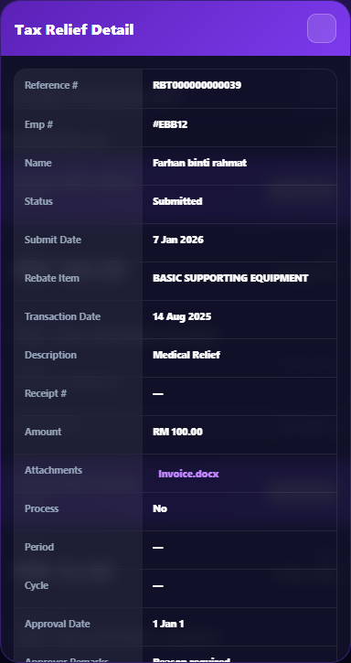
37. Payroll · Prior Pay Data
Prior Pay Data · 相近布局
modules/payroll/options/prior-pay-data.html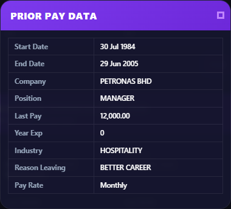
38. Project & Task History · workPlan
Work Plan Details · 相近布局
modules/project-task/options/history.html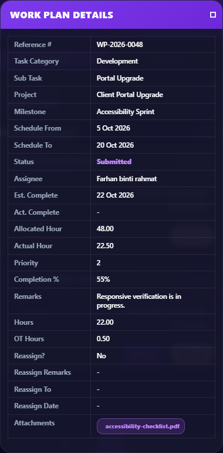
39. Project & Task History · timesheet
Timesheet Details · 相近布局
modules/project-task/options/history.html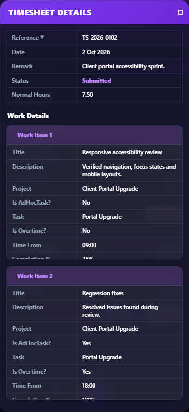
40. Project & Task Pending Approval · Timesheet
Timesheet Details · 两列表格详情
modules/project-task/options/pending-approval.html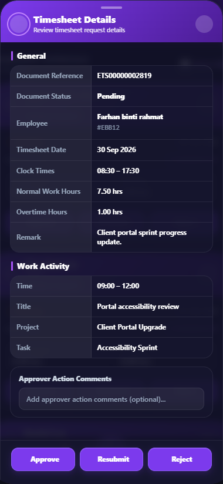
41. Attendance — Similar field rows · attendance.html
Attendance Details · 相近布局
modules/attendance/options/attendance.html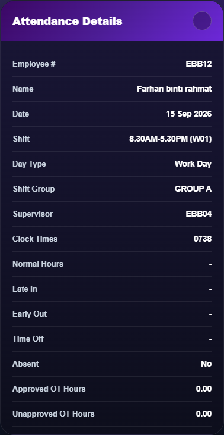
42. Attendance — Similar field rows · feedback-history.html
Attendance Advice Approval · 相近布局
modules/attendance/options/feedback-history.html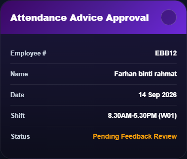
43. Attendance — Similar field rows · overtime.html
Final OT Approval · 相近布局
modules/attendance/options/overtime.html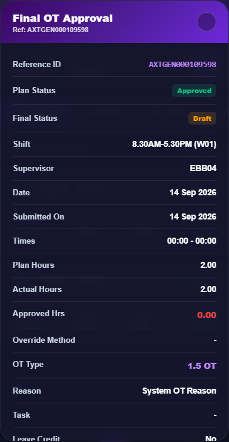
44. Attendance — Similar field rows · hours-summary.html
Attendance Details · 相近布局
modules/attendance/options/hours-summary.html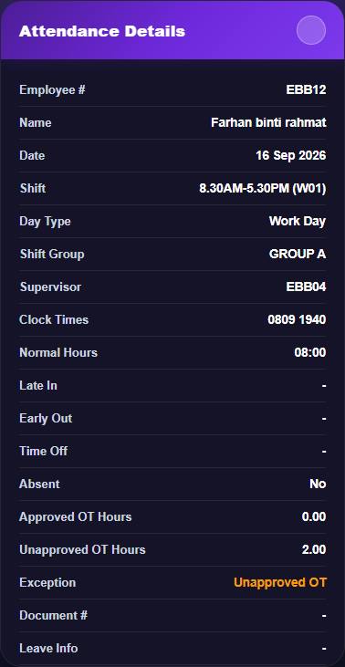
45. Attendance — Similar field rows · staff-hours-summary.html
Attendance Details · 相近布局
modules/attendance/options/staff-hours-summary.html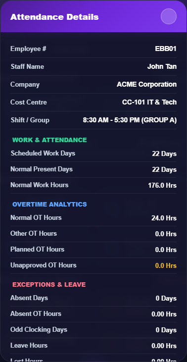
46. Attendance — Similar table · Work Hour Violation
LSH · 相近布局
modules/attendance/options/work-hour-violation.html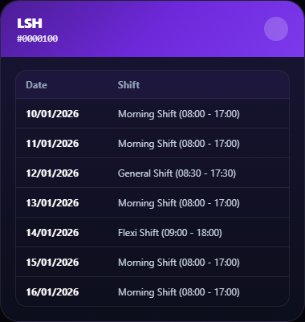